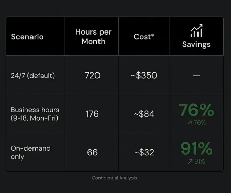
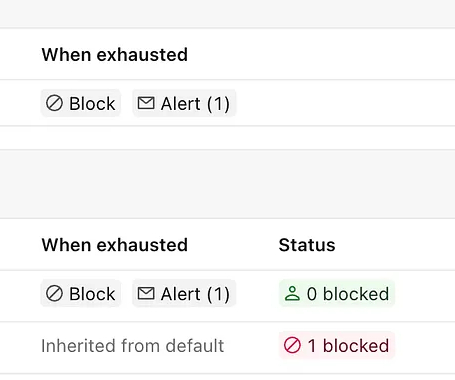
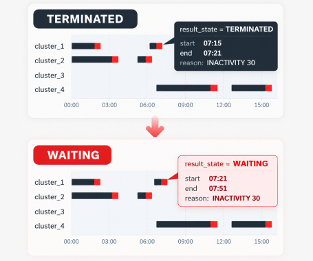
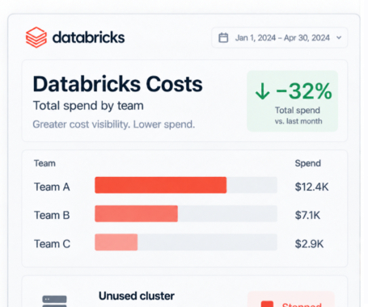

Apps cost control
Cut Databricks Apps costs with scheduled start and stop
Start Apps before business hours and stop them when they are no longer needed.
Read guideFinOpsWay guides
Clear ways to find waste, explain it and take action in the workspace.

Apps cost control
Start Apps before business hours and stop them when they are no longer needed.
Read guide
Genie cost control
Set a Genie budget, block usage at the threshold and review spend by user.
Read guide
Cluster monitoring
Find scheduled work that keeps an all-purpose cluster running after the task has finished.
Read guide
Cost transparency
Give engineers useful cost signals while keeping query text protected by default.
Read guide